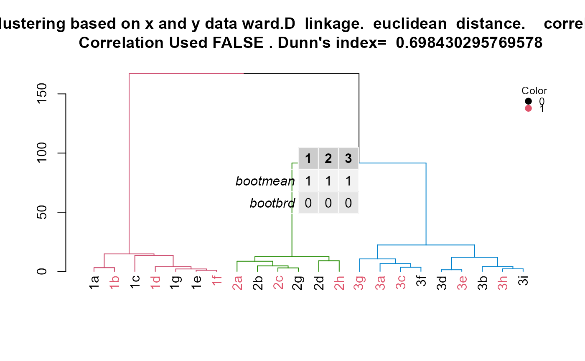

HierarchicalClustering.RdVersatile hierarchical clustering function that can use correlation or distance clustering. The linkage can also be specified.
HierarchicalClustering( working.data, clustering.columns, label.column.name, grouping.column.name, number.of.clusters.to.use, distance_method = "euclidean", correlation_method, linkage_method_type, Use.correlation.for.hclust, terminal.branch.font.size, title.to.use )
| working.data | A dataframe of data |
|---|---|
| clustering.columns | A vector of strings that indicate the names of columns to be used for clustering. The columns should be numerical. |
| label.column.name | A string that indicates the name of column to be used for labeling the terminal branches of the dendrogram. |
| grouping.column.name | A string that indicates the name of column to be used for coloring terminal branches. The column should contain numerical values and should be a factor. A value of 0 will result in a black terminal branch. A value of 1 will result in a red terminal branch. |
| number.of.clusters.to.use | A numerical value indicating how many clusters (main branches) to be colored. |
| distance_method | A string that specifies the distance method for clustering. Default option is "euclidean". See documentation for stats::dist() for all available options. This is only used if Use.correlation.for.hclust is FALSE. |
| correlation_method | A string that specifies the correlation method to be used for clustering. Default option is "spearman". See documentation for stats::cor() for all available options. This is only used if Use.correlation.for.hclust is TRUE. |
| linkage_method_type | A string that specifies the linkage method to be used for clustering. See documentation for stats::hclust() for all available options. Examples are "ward.D", "complete". |
| Use.correlation.for.hclust | A boolean specifying if correlation between observations should be used to cluster. If correlation is not used, then distance between observations is used instead. |
| terminal.branch.font.size | A numeric value specifying font size of the labels for the terminal branches as specified by label.column.name. Default value is 1. |
| title.to.use | A string that indicates the title of the plot. |
A list with three objects: 1.hclust.res: The object outputted from stats::hclust(). 2.dend1: The object outtputed from converting hclust.res into a dendrogram. 3.kcboot: The results from fpc::clusterboot() which evaluates the stability of the clusters. 4.title: Title to use for dendrogram 5.cluster.labels.renamed.reordered: Cluster group matched with labels of samples. 6.d: Table generated with kcboot to assess stability of clusters
Correlation type, distance type, linkage type, and coloring of groups can all be specified. The result is a dendrogram of the hierarchical clustering with coloring scheme that shows which observations belong to which cluster. Additionally, coloring of the terminal branches can be done with meta data so that the meta data can be compared to the cluster assignment. Links to resources used to make this function are provided in the code.
Other Clustering functions:
CalcOptimalNumClustersForKMeans(),
GenerateParcoordForClusters(),
generate.2D.clustering.with.labeled.subgroup(),
generate.3D.clustering.with.labeled.subgroup(),
generate.plots.comparing.clusters()
id = c("1a", "1b", "1c", "1d", "1e", "1f", "1g", "2a", "2b", "2c", "2d", "3h", "3i", "3a", "3b", "3c", "3d", "3e", "3f", "3g", "2g", "2h") x = c(18, 21, 22, 24, 26, 26, 27, 30, 31, 35, 39, 40, 41, 42, 44, 46, 47, 48, 49, 54, 35, 30) y = c(10, 11, 22, 15, 12, 13, 14, 33, 39, 37, 44, 27, 29, 20, 28, 21, 30, 31, 23, 24, 40, 45) color = as.factor(c(0, 1, 0, 1, 0, 1, 0, 1, 0, 1, 0, 1, 0, 1, 0, 1, 0, 1, 0, 1, 0, 1)) example.data <- data.frame(id, x, y, color) #dev.new() plot(example.data$x, example.data$y)results <- HierarchicalClustering(working.data = example.data, clustering.columns = c("x", "y"), label.column.name = "id", grouping.column.name = "color", number.of.clusters.to.use = 3, distance_method = "euclidean", correlation_method = NULL, linkage_method_type = "ward.D", Use.correlation.for.hclust = FALSE, terminal.branch.font.size = 1, title.to.use = "Clustering based on x and y data") hclust.res <- results[[1]] dend <- results[[2]] kcboot.res <- results[[3]] title.to.use <- results[[4]] labeled.samples <- results[[5]] stability.table <- results[[6]] #Plot dendrogram plot(dend, main = title.to.use)#Add legend to dendrogram legend.labels.to.use <- levels(example.data[,"color"]) col.to.use <- as.integer(levels(example.data[,"color"])) + 1 pch.to.use <- rep(20, times = length(legend.labels.to.use)) graphics::legend("topright", legend = legend.labels.to.use, col = col.to.use, pch = pch.to.use, bty = "n", pt.cex = 1.5, cex = 0.8 , text.col = "black", horiz = FALSE, inset = c(0, 0.1), title = "Color")#Display sample assignment labeled.samples#> 1a 1b 1c 1d 1g 1e 1f 2a 2b 2c 2g 2d 2h 3g 3a 3c 3f 3d 3e 3b 3h 3i #> 1 1 1 1 1 1 1 2 2 2 2 2 2 3 3 3 3 3 3 3 3 3#Display kcboot full output kcboot.res#> * Cluster stability assessment * #> Cluster method: hclust #> Full clustering results are given as parameter result #> of the clusterboot object, which also provides further statistics #> of the resampling results. #> Number of resampling runs: 100 #> #> Number of clusters found in data: 3 #> #> Clusterwise Jaccard bootstrap (omitting multiple points) mean: #> [1] 1 1 1 #> dissolved: #> [1] 0 0 0 #> recovered: #> [1] 100 100 100